Here you can learn how to get started making your programs and how to use the different blocks!
The different tabs represent different types of blocks which can be seen when you click on the tabs.
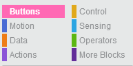If you click on Motion for example, you will see blocks that can make the robot move,
such as forward, backward and turn.
To create a program, you simply click on a block and drag it to the workspace, where you then drop it.
Usually you will begin with a When clicked block. This will mark the beginning of your program and tell the PedaGogo when to start executing your program, which means it will start to do the things your program tells it to when you click on the button with the same colour. There are three buttons to chose from; green, blue and yellow.
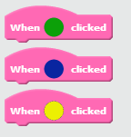You may have seen that there is also a red button on the PedaGogo, this button will be explained later on.
You can tell by the shapes of the blocks how they fit together. By dragging the blocks inside or underneath other
blocks, they will snap into place automatically.
The orange blocks that you see above are called loops. You can use these to repeat parts of, or all of, your program. If you want to, for example, spin round four times, you can put the repeat block around the turn block and change the repeat-value to 4.
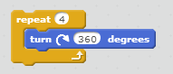To change the values in the blocks, double click on them and type in a new value!
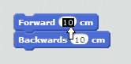The forever block will repeat (loop) the blocks placed inside forever, or until you end the program. The repeat until block has an empty space shaped like a diamond. You can find the blocks that fit in here under the tab called Operators.
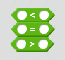To use these, you need to know more about variables.
Variables are used to store information, for example they can be used as counters. This can be used in loops: instead of changing the value in a repeat block, you could use a repeat until block like in the picture below.
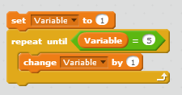There are no variables when you begin your program, you need to make them. To do this, click on the Data tab and then on the Make a Variable button.
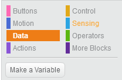You will then be asked to give your variable a name. Try to think of good names for your variables so that you remember what they are for. For example NbrOfSpins or TimesLeft. Once you have created your variable, you will get some new blocks to use.

With the set block you decide the starting value of your variable. If you want to count upwards for example, you can start on 0, if you're counting down, then set your variable to the highest value you want to use. With the change-by block you decide by how much you want your variable to change each time. For instance if you are counting then you should set this value to 1.
Variables are also used for conditionals which are explained below.
A condition is when you say If this happens, do that. So for example, you can use variables to say if speed reaches max speed, then decrease the speed. This is done using orange blocks in the Control tab that begin with if. An example is shown below.
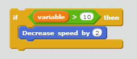This means that if the value of the variable, which in this case may be a speed, is bigger than 10, then decrease speed by 2.
There is also an if-then-else block which means that if the variable, in the example above, is not bigger than 10, then you can tell it to do something else. Below, it is now telling the robot to increase the speed by two if the variable is less than 10.
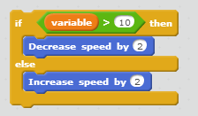Lists are used to keep variables or values in a specific order. You can add and delete things from a list but also replace items in the list with other values or variables. You can also check whether a list contains a certain value or not.
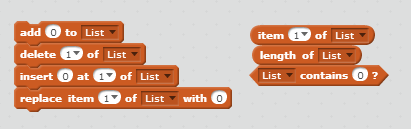As with variables, there are no ready lists to use, you need to make your own. In the tab called Data, click on the Make a List button and choose a name for your list.
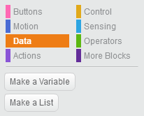You can then start adding values or variables to your list using the add block, which adds your values last in your list. You can also use the insert-at-of block by saying where in the list you want to add your value.
You can see an example of how to use a list below.
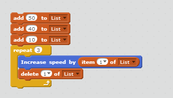This program will add the values 50, 40 and 10 to the list called List in that order. It will then increase the speed by the first value in the list, and then delete this value so that in the next loop, the first value in the list is now 40. It will do this 3 times so that the last increase in speed will be by 10, then the list will be empty.
Operators are the green blocks that can be found under the Operators tab. They can be used with values that you write yourself or with variables.
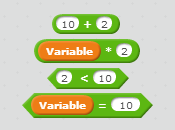In the picture below you can see some examples of how to use operators.
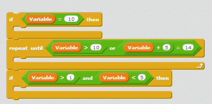In the first If block there is an equals operator saying that the value of the variable should equal
10. In the repeat until block there is an or operator. This is saying that the value of the variable should
either be larger than 10, or, the value of the variable plus 5 should equal 14. The loop will repeat until one of these
is true.
In the next if block you can see an and operator. This is saying that the value of the variable should be
larger than 1, and, the value should be smaller than 5. So, the value of the variable has to be between 1 and 5 for this
to be true.
The mod operator is a bit tricky to understand. This is used to say that a number can be divided by another number and the result will be a whole number, meaning there will be no decimals. So for instance, 9 divided by 3 is 3, and 10 divided by 2 is 5. If the result is a whole number, the result of using mod will be 0. This can be used to, for example, check if a number is even or odd like in the example below.
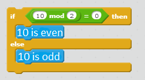The speed can be changed by changing the values in the speed blocks. Changing the value by 1 means.. Blablabla. Max speed is.. Min speed is.. jadajadajada!
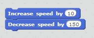To tell the robot to make a turn, you use the turn blocks to turn either left or right. You can decide how many degrees the robot should turn by changing the value in the blocks. Here are some values of degrees you could use.
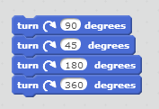Below are some examples of how the robot turns depending on the degree-value

If you need the robot to turn around at a specific angle, like when you want it to move in a triangle, remember to calculate the correct angle for the turn-block as follows: